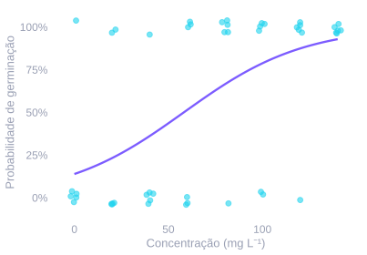
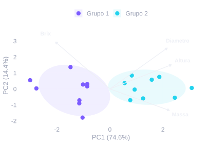
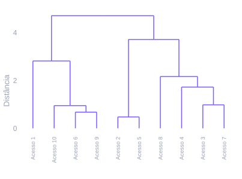
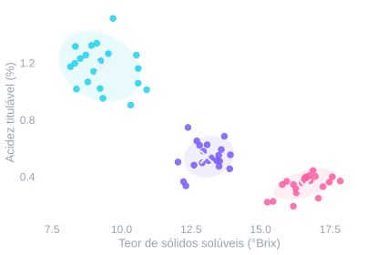

Do experimento à conclusão, com segurança nos números.
Um guia prático para estudantes e pesquisadores de ciências agrárias: como planejar, organizar,
analisar e interpretar experimentos, com exemplos, croquis e código em R. E ferramentas gratuitas
para levar a análise direto ao navegador.
Estatística aplicada por quem também está no campo e no laboratório.
Sou engenheiro agrônomo, doutor em Fitotecnia, e atuo na Universidade Federal da Paraíba, em Areia.
Cheguei à agronomia vindo da Administração, e foi na experimentação agrícola que o gosto pelos números
encontrou um propósito: transformar dados de campo em respostas confiáveis.
Nos últimos anos, acompanhei a análise de dados de mais de 90 pesquisadores, em temas que vão de
experimentos com melão e melancia a estudos de epidemiologia, enfermagem e química, em mais de seis
universidades públicas. Esse trabalho deixou claro onde as dificuldades se repetem: a escolha do
delineamento, a planilha que não conversa com o R, o teste de médias que não combina com o tratamento,
a interação que precisa ser desdobrada.
Este site reúne essa experiência. O guia acompanha a ordem real de um
experimento, do planejamento à redação dos resultados. As ferramentas — Plota, Ranova, Calibra e
Croma — trazem essas mesmas análises para uma interface simples, para quem precisa do resultado
com rigor e sem escrever código.
90+
pessoas atendidas
600+
relatórios entregues
~2 mil
scripts de análise escritos
6+
universidades públicas atendidas
Por trás de cada análise há uma pergunta concreta. Uma dose de adubo aumenta a produtividade, ou a
diferença é apenas variação entre parcelas? Um produto reduz de fato a germinação de uma praga?
Quais atributos de qualidade do fruto caminham juntos, e é possível resumir uma dúzia deles em duas
dimensões interpretáveis? Acessos semelhantes formam grupos naturais?
Para respondê-las entram a ANOVA com o teste de médias adequado, a regressão linear, não linear e
logística, os componentes principais e a análise de agrupamento, além dos testes não paramétricos
quando os pressupostos não se sustentam. Boa parte dessas análises sai pronta do Plota
e do Ranova; as mais específicas fazem parte do meu trabalho de consultoria em R.
Alguns exemplos ilustrativos, com dados fictícios:
Barras com erro e letras de Tukey
A dose aumenta a produtividade ou a diferença é ruído? Comparação de médias com letras do teste de Tukey, como o Ranova e o Plota geram automaticamente.
Linhas com erro, dois grupos
Dois tratamentos evoluem de formas diferentes ao longo do tempo? Saída do Plota, com erro-padrão em cada avaliação.
Ajuste de regressão
Qual a dose de máxima eficiência, e qual curva explica melhor a resposta? Aqui, linear e quadrática; o Plota também ajusta modelos cúbico, logarítmico e LOESS e indica qual descreve melhor os dados.
Regressão logística

Germinou ou não germinou? Sobreviveu ou não? Quando a resposta é binária, a regressão logística estima a probabilidade do evento em função da dose.
Componentes principais (PCA)

Uma dúzia de variáveis medidas, uma pergunta só: qual é o padrão? O biplot resume o conjunto em duas dimensões e mostra, pelos autovetores, como cada variável contribui para a separação dos grupos.
Cluster hierárquico

Quem se parece com quem, e o quanto? O dendrograma agrupa por similaridade e mostra a que distância cada grupo se separa. A altura de corte da árvore define quantos grupos existem, e essa escolha merece critério.
Agrupamento k-means

Quantos grupos existem de verdade, e onde fica o centro de cada um? O k-means define os grupos pela distância até o centroide (marcado com ×). O número de grupos se escolhe com critérios como o método do cotovelo e a silhueta.
Métodos que já apliquei
DIC, DBC e esquemas fatoriais
Parcelas subdivididas
Regressão linear, não linear e logística
Testes não paramétricos
Componentes principais & cluster
Análise de sobrevivência
Áreas de atuação
Estatística experimental
Visualização de dados
Aplicações Shiny
Bancos de dados & autenticação
Cursos de R e Python
Ferramentas
Análises prontas, direto no navegador.
Quatro aplicações gratuitas que colocam em prática o que o guia explica, sem instalar nada.
Plota
Gráficos elegantes para a pesquisa agronômica
Barras, linhas, interação, regressão e boxplot com fonte, cor e tamanho sob medida.
Estatística embutida, painéis com múltiplos gráficos e exportação em TIFF, PNG, PDF, SVG e EPS
prontos para artigos e apresentações.
Cole os pontos lidos no laboratório e veja a reta, a equação y = bx + a e o R²
se atualizarem a cada edição. Feito para conferir rapidamente o ajuste de uma curva de análise.
ANOVA para DIC, DBC, esquema fatorial, parcelas subdivididas e subsubdivididas.
Testes de médias (Tukey, Duncan, Scott-Knott e mais), desdobramento de interações
e relatórios em PDF e HTML prontos para entrega.
Organize, converta e compare amostras de cor por coordenadas CIELAB ou CIELCH,
com agrupamento de repetições, diferença ΔE (CIEDE2000) e relatório em PDF com um clique.